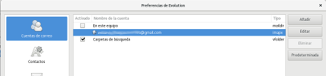
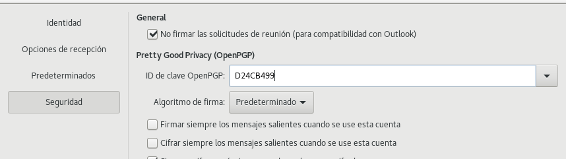
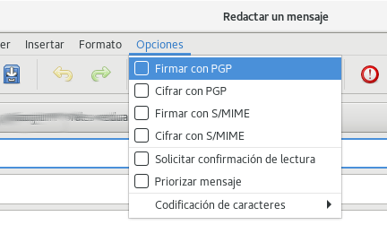
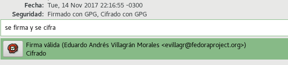
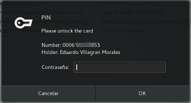

Ya que tenemos la Yubikey lista, configuraremos el cliente de correo Evolution para usar la llave GPG que ella posee.
-
Identificamos el hash de la llave GPG a usar
gpg2 --list-secret-key sec# rsa4096 2011-11-23 [SC] 95E30BC35BC1FB86E67B8F73F0DDFF1DD24CB499 uid [ absoluta ] Eduardo Andrés Villagrán Morales <evillagr@fedoraproject.org>En este caso el identificador serán los últimos 8 caracteres:
D24CB499 -
Acceder a las Preferencias de Evolution 
- Damos doble clic sobre la cuenta de correo que deseamos asociar con la llave GPG
- En el apartado Seguridad debemos indicar la llave a usar. Se ingresan los últimos 8 caracteres del hash 
Ahora, cuando enviemos un correo podemos firmarlo. 
Y cuando nos envíen un correo cifrado con nuestra llave pública, podremos descifrarlo. 
En ambos casos, se solicitará el PIN de llave para poder acceder a ella: 